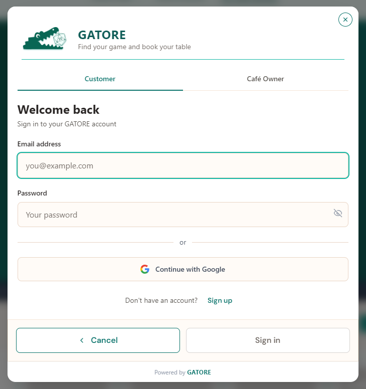
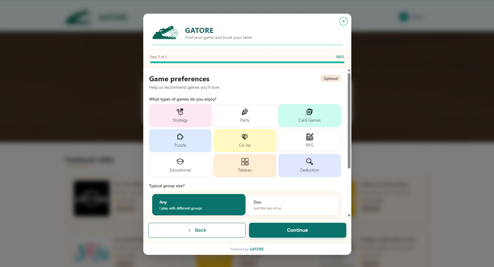
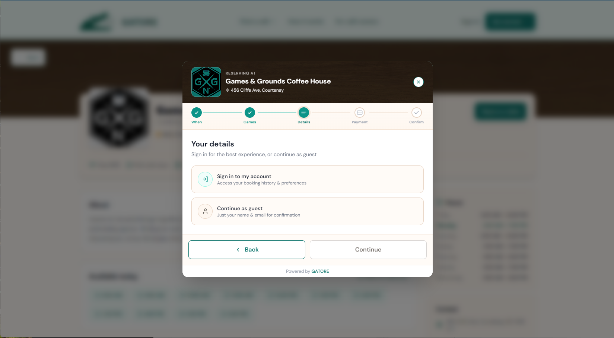

Reservations
Customers can browse café listings, check availability, and book a table — with game preferences built into the booking flow.
The reservation and game library platform built for board game
cafés.
Filling a gap that off-the-shelf software couldn't.

Board game cafés are a growing category of hospitality business — but no dedicated software exists for how they actually operate. Generic reservation tools don't account for game libraries. Generic library tools don't handle table bookings. Café owners were cobbling together mismatched systems, and customers had no unified way to discover venues, check game availability, or connect with others to play.
Design and build a purpose-built platform for board game cafés: one product that handles everything on the customer side (discovery, reservations, social matchmaking, personalized recommendations) and everything on the business side (café management, game catalog, reservations dashboard).
GATORE is a two-sided platform — one product serving two distinct audiences with different needs, different mental models, and different success metrics.
Every existing tool treats the table and the game as two separate decisions.
Before committing to an information architecture, I evaluated 9 products across four categories: board-game-café-native platforms (GameLedger, GameShelf, BookingNinja, TWICE), general hospitality reservation systems (OpenTable, Resy, SevenRooms), game discovery tools (BoardGameGeek), and the status quo — what cafés actually run today.
The status quo was the most revealing. At Snakes & Lattes, the category's reference chain, a browsable library of 3,000+ games sits on a page with no connection to booking. Groups larger than eight are routed to a different booking tool entirely. Reservations just get turned off after 4 PM on weekends. And once you're inside, finding a game comes down to coloured stickers on the shelves, a low-tech workaround nobody's replaced yet.
That research turned up three recurring gaps. Below, each gap is paired with how GATORE addresses it:
Customers can browse café listings, check availability, and book a table — with game preferences built into the booking flow.
Discover new cafés and connect with other players looking for a group. GATORE helps you find people to play with, not just a place to play.
Customers build a profile, track their play history across visits, and receive personalized game recommendations based on what they've played and enjoyed.
Café owners get a dedicated dashboard to manage their venue — reservations, game library catalog, and café-side operations — all in one place.

The hardest design challenge on GATORE was serving two very different audiences within a single product. A customer discovering a new café thinks nothing like an owner managing a Saturday night rush.
That meant two separate design contexts — different information architecture, different interaction patterns, and different definitions of success for each side.

Customers and café owners both need to sign in, but a single generic login form wasn't going to cut it for either of them. Before landing on tabs, I played with a couple other options — separate sign-in buttons in different parts of the site, or just putting the business portal on its own site entirely. Neither felt right; both could leave someone stuck on the wrong side with no quick way back.
So I went with one shared page and put tabs at the top to switch between Customer and Business, defaulting to Customer since that's most of the traffic. Get Started (creating an account) uses a dropdown instead, since that's a bigger commitment — but even if someone picks Customer there, they can still hop over to the business portal with the tab on that same page.
Tabs also just made the page easier to build and host, but that's not the real reason I picked them. What sold me was the recoverability — land on the wrong side, and you're one click from fixing it instead of hitting a dead end. It's also one URL to remember, which matters for people who wear both hats, like a café owner who's also a customer somewhere else. And honestly, it just fits GATORE better: one platform for both sides.

Account creation had to ask for a lot — profile info, game preferences, group size — and cramming all of it onto one page felt like the fastest way to lose people. I split it into a five-step wizard with a progress bar up top, so it's always clear how much is left instead of one long, dread-inducing scroll.
For game preferences specifically, I skipped the standard checkbox list and used colorful icon tiles instead — Strategy, Party, Card Games, Co-op, and so on, each with its own color and icon. That was mostly about making the step feel more playful than a form, though it doubles as a faster visual scan than reading a list of labels.
This step is also marked Optional. Preferences feed the recommendation engine, but I didn't want them gatekeeping account creation — someone can skip straight through and add preferences later instead of stalling out on step 5 of 5.

Competitive research on other booking tools made this one pretty clear: almost none of them make you create an account just to book a single table. So on the "Your details" step of a reservation, I gave people a choice — sign in, or continue as a guest with just a name and email.
An account still has real upside. It's the only way to see your booking history, set game preferences, get recommendations, and track what you've actually played. But someone booking a table for the first time shouldn't have to buy into all of that just to sit down and play.
Guest checkout keeps the reservation flow itself lightweight, while the account benefits are pitched right there in the "Sign in" option — so people can see what they'd be getting without it being a requirement.
GATORE's name is a play on "alligator," which made green the obvious starting point — but a literal reptile green would have felt cold and corporate. Teal was chosen instead: it carries the green association while feeling approachable and modern. Warm beige and browns pair it to the board game café setting, giving the brand a cozy, welcoming feel over a sterile one.
The design system had to flex across both sides of the product. Customer-facing screens prioritize warmth, discovery, and delight. Business-facing screens prioritize clarity, density, and efficiency. The same tokens — color, type, spacing — served both contexts.
Built with: React + TypeScript + Tailwind v4 + Node.js
GATORE placed second in the Conestoga College capstone program at the final demo day — validating the design and product direction in front of an external audience.
Leading design from competitive research through full-stack build — across two distinct user surfaces — reinforced how design decisions ripple into development, and vice versa.
Building a shared design system that served both a customer discovery experience and a business management tool was a meaningful systems design challenge at real product scale.


GATORE design system — tokens, components, and documentation